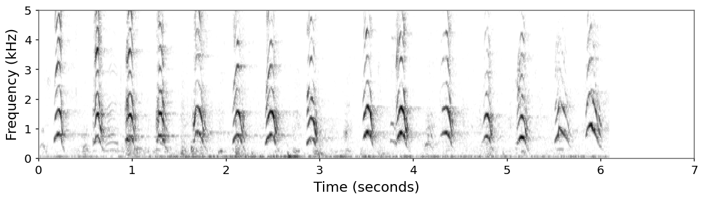
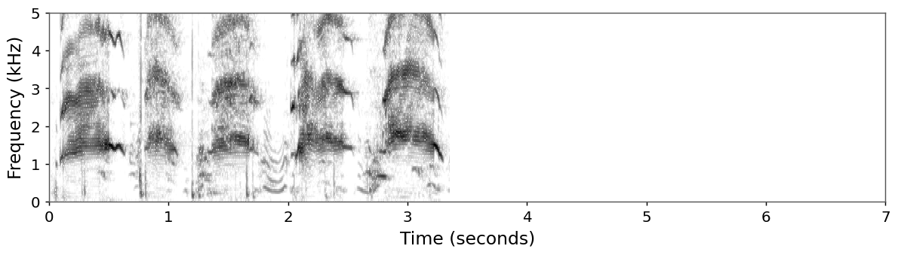
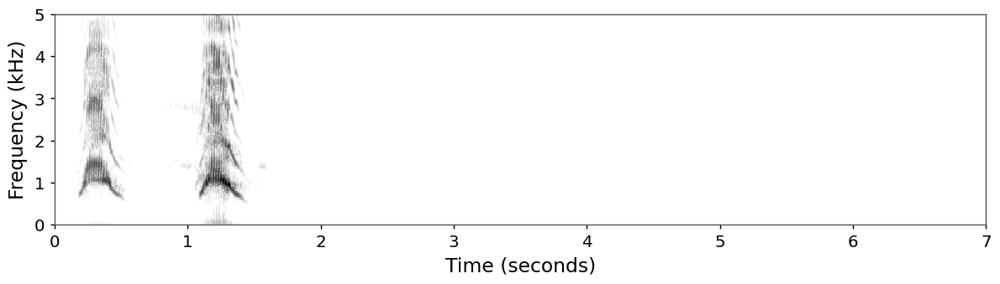
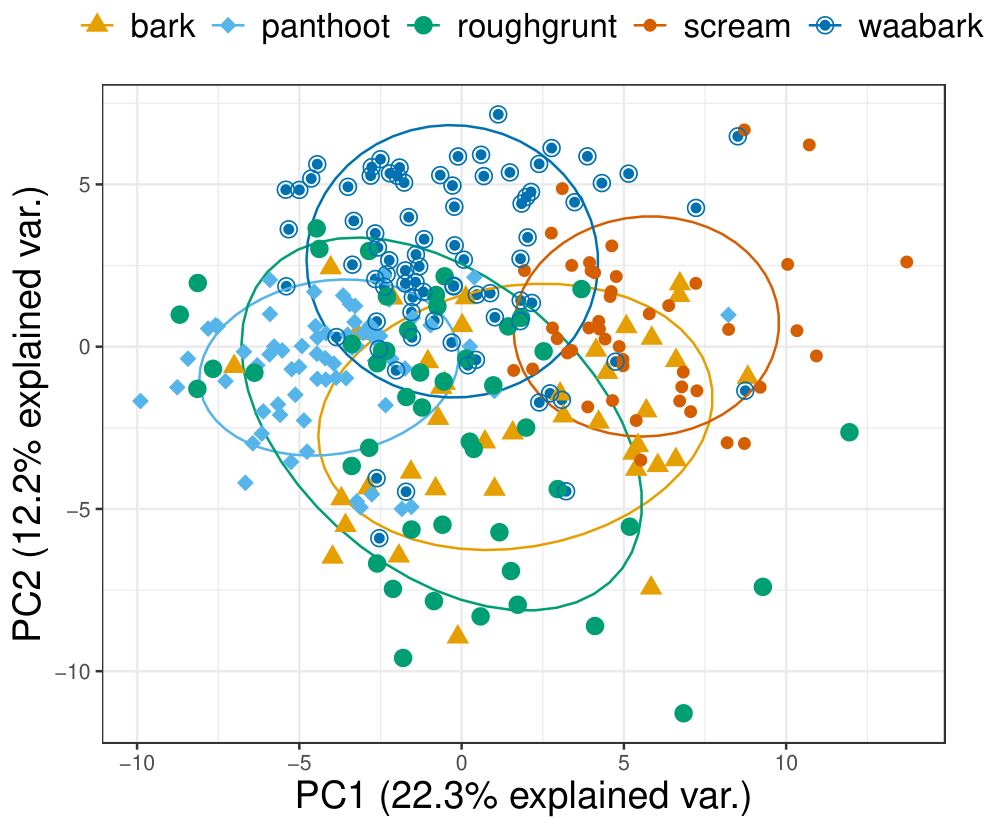

Listen first
Before diving into algorithms, listen to five chimpanzee calls yourself. Each spectrogram below maps sound across the same seven-second window: time runs left to right, pitch climbs from bottom to top, and darker ink marks louder energy.





The pant-hoot and the rough-grunts stand out right away, whereas the other three calls blur into one another. Pinpointing exactly where a bark becomes a waa-bark—or where a long waa-bark crosses into a short scream—is difficult by ear, and my machine-learning classifiers stumbled over that exact same boundary.
These five clips come from fifty-year-old magnetic tapes recorded by Hetty van de Rijt-Plooij and Frans Plooij at Gombe National Park, Tanzania, between 1971 and 1973, later digitized and released publicly. I began this benchmark in late 2017 while my own Gombe field recordings were still coming in, using their open archive to stress-test my acoustic tools first.
Why the names matter
Almost every claim about chimpanzee communication rests on a call label. Asking whether pant-hoots carry a community dialect, whether rough-grunts signal specific foods, or whether screams track attack severity assumes researchers agree on what counts as a pant-hoot, a rough-grunt, or a scream.
Those categories began with careful human listening. In the 1960s, Jane Goodall and Peter Marler mapped the vocal repertoire of Gombe chimpanzees by ear and by inspecting spectrograms, establishing names that primatologists have used and expanded ever since. Relying on human-drawn labels is a sensible starting point, yet it introduces three recurring problems:
- Listeners disagree: Two trained observers can assign the same recording to different categories, and expectations about context can nudge what a listener hears.
- Calls grade into one another: As Marler noted in 1976—and as the audio clips above illustrate—many chimpanzee calls form continuous gradients rather than neat boxes.
- One name can lump distinct calls: Ongoing debates over what rough-grunts mean may persist partly because several separate vocalizations share that single label.
I also had a practical stake in testing our acoustic tools before moving forward. For my main dissertation study on chimpanzee dialects, I knew sample sizes would be small, and with small datasets the choice of acoustic measurements can swing the conclusion. Before analyzing my new field recordings, I wanted to test whether modern speech-processing features outperformed the field's traditional measurements.
Two ways to measure a call
Machine-learning models sort numbers rather than raw audio, so my first step was turning each recording into a table of acoustic features. I compared two competing ways of describing a sound.
Traditional acoustic measurements. Primatologists typically measure physical properties of pitch and timing: how high a call goes, how its pitch rises and falls, which frequency carries the most energy, and how long it lasts. The field's standard tool is LMA, written by Kurt Hammerschmidt at the German Primate Center in Göttingen. I visited his lab in March 2020 to learn the software directly and extracted 90 traditional acoustic measurements per call.
Speech-recognition features. Voice-to-text systems summarize sound differently, relying on mel-frequency cepstral coefficients (MFCCs)—numbers built around how biological ears perceive frequency. Ears do not treat every frequency gap equally: a 100-hertz step jumps out clearly in a low rumble yet barely registers in a high whistle. MFCCs warp the frequency scale to mirror that perceptual curve and capture the overall spectral envelope of the sound. Using the open-source Python library pyAudioAnalysis, I extracted 136 speech-recognition features per call.
Testing ear-shaped features on chimpanzees made biological sense because animal calls evolve to be heard by listeners rather than measured on a linear physics scale. Although MFCCs are calibrated to human hearing—only an approximate stand-in for a chimpanzee's ear—they had already worked well for classifying frog, bird, and elephant calls, yet nobody had benchmarked them on chimpanzee call types.
Two kinds of test
From the archival recordings, I selected 281 clean calls spanning five types I could identify with high confidence, discarding noisy clips and overlapping choruses. I then evaluated traditional measurements and speech-recognition features under two complementary testing regimes.
Supervised classification (with labels). I trained each classifier on 70% of the calls alongside their human labels and scored accuracy on the remaining 30% (82 held-out calls) that the model had never heard. On both feature sets, I compared three classifiers:
- Discriminant function analysis: A classic linear classifier long favored in primatology.
- Random forest: An ensemble that grows hundreds of small decision trees and lets them vote on each call.
- Single-hidden-layer neural network: A deliberately compact network, kept small because 281 calls cannot support deep architectures without overfitting.
Unsupervised discovery (without labels). To test whether five categories emerge from sound alone, I stripped away all human labels and ran two standard exploratory methods: k-means clustering (which partitions calls into groups by similarity) and principal components analysis, or PCA (which projects dozens of correlated measurements onto the two axes capturing the most variation).
I was teaching myself machine learning at the time, drawing in part on Jeff Leek's online course, and built the full benchmarking pipeline in R using the caret package. I presented an early version based on the speech-recognition features at the Acoustical Society of America meeting in May 2018, ending with a slide explicitly asking the acousticians in the room to critique the approach.
What happened
Neither feature set nor classifier pulled ahead: every pairing matched human labels on roughly three calls in four, clustering between 71% and 78% accuracy on the held-out test set. To see which specific call types drove errors, I scored each type with its F1 score—a single 0-to-100 metric that balances how many true pant-hoots a classifier catches (recall) against how often its "pant-hoot" label is right (precision).

Three clear patterns emerged across the six feature-and-model combinations:
- An overall draw: A random forest on traditional measurements ranked highest at 78% test accuracy, essentially tied with the neural network on speech-recognition features at 77%, while the lowest pairing scored 71%. With only 82 calls in the test set, every accuracy figure carries roughly ten percentage points of uncertainty either way, leaving no meaningful overall winner.
- Clean separation for pant-hoots and screams: Every classifier achieved strong F1 scores between 74 and 92 on these two acoustically distinct call types.
- Consistent confusion on barks: No pairing cleared an F1 score of 57 on barks, and one dropped to 25. Because barks grade smoothly into waa-barks and screams, the algorithms stumbled over the exact ambiguity a human listener hears.
Comparing the two feature sets call by call confirmed the tie: traditional measurements clearly outperformed speech-recognition features on rough-grunts, whereas speech-recognition features edged slightly ahead on pant-hoots, screams, and waa-barks.
Without the names
Stripped of human labels, the computer did not rediscover five chimpanzee call types. Using either traditional measurements or speech-recognition features, unsupervised clustering pointed to three natural groups instead of five. Pant-hoots pulled cleanly into their own cluster, whereas barks never formed a distinct group—at three clusters or at five—scattering across screams, waa-barks, and rough-grunts.


Here the comparison split along an informative line. In the two-dimensional PCA plots above, speech-recognition features pulled pant-hoots and rough-grunts apart more cleanly than traditional measurements did with zero label supervision. Yet when I forced k-means clustering to partition the calls into exactly five groups, traditional measurements aligned slightly better with my five human labels than speech-recognition features did (69% vs. 64%).
Unsupervised clustering also surfaced a pattern I had not planned to test. When I allowed six or seven clusters, rough-grunts split cleanly into two separate groups—supporting what primatologists listening in the forest have long suspected: "rough-grunt" may bundle more than one distinct call.
What I decided
I set out hoping speech-recognition features would deliver a clear accuracy jump, and instead found a near tie. On pant-hoots—the call type central to my dialect research—traditional measurements scored an F1 of 85 and the strongest speech-recognition pairing scored 88.
A three-point gap was far too small to justify switching pipelines. Earlier chimpanzee dialect studies had relied on traditional acoustic measurements and discriminant function analysis, so sticking with those established tools gave my replication a crucial methodological shield: when my dialect study later found no reliable community dialects at Gombe, nobody could dismiss the null result as an artifact of switching measurement tools.
What this does not show
Five clear limits frame what this benchmark can and cannot prove:
- Human labels as the answer key: Every supervised model was graded against my own call names. When a classifier disagrees with me over a bark, only field playback experiments with wild chimpanzees can tell which boundary matters to the animals.
- Curated, clean examples: The Gombe archive lists 39 call types, whereas I tested the five clearest types using clean recordings—making the real-world classification problem substantially harder.
- A single small archive: All 281 calls come from one chimpanzee population recorded on analog tape in the early 1970s.
- Lost temporal order: Averaging each feature across the entire duration of a call erases sequence structure, throwing away the exact phase order that defines a pant-hoot.
- A tiny neural network: A single hidden layer on 281 calls says nothing about what deep neural networks can achieve when given thousands of recordings.
I never published this comparison as a standalone paper; it forms Chapter 1 of my Ph.D. dissertation.
What I would do now
Looking back at this chapter highlights how quickly audio machine learning has moved beyond hand-engineered feature tables. Instead of weighing 90 acoustic summaries against 136 others, modern pipelines feed the spectrogram itself into a deep neural network and let the model learn which time-frequency shapes matter—provided you have enough labeled examples.
That shift directly shaped the system I built years later at Emory for infant macaque vocalizations. Working with over ten thousand labeled calls rather than 281, I trained a PyTorch neural network that reads spectrograms directly to locate and classify calls in raw audio—built on the same ear-warped mel frequency scale I first tested here. Even as deep networks get sharper at reproducing human labels, the deeper biological question stays open: whether our categories match the ones the animals themselves hear.
Read more. Chapter 1 of my Ph.D. dissertation (University of Minnesota, 2022), “A comparison of quantitative classification techniques for studying chimpanzee vocalizations.” An early version was presented as Desai, Lehman, Munson, and Wilson, “Supervised and unsupervised machine learning techniques for classifying chimpanzee vocalizations,” Acoustical Society of America, May 2018.
With Michael Wilson (advisor), Clarence Lehman, and Benjamin Munson. Thanks to Kurt Hammerschmidt for teaching me LMA, and to Matthew Winn and Mark Bee.
The recordings come from Plooij, van de Rijt-Plooij, Fischer, Wilson, and Pusey (2015), “An archive of longitudinal recordings of the vocalizations of adult Gombe chimpanzees,” Scientific Data 2:150027, archived at the Macaulay Library and on Dryad (public domain). The five clips are examples cut from the archive's longer recordings for my talks. I created the spectrograms and score chart for this page; the two scatter plots are Figures 6 and 7 of the dissertation.